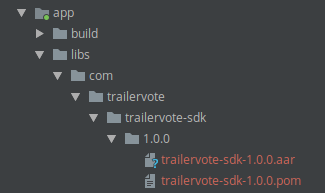

Introduction
The TrailerVote is a innovative software service that enables movie-ticketing apps to increases user engagement and customer understanding by encouraging moviegoers to rate trailers as they are played on the big screen of the cinema. Users are later sent notifications as a reminder that tickets for the movie they wanted see are now on sale.
Features include:
- Theatre-Optimized Audio Recognition: Optimized for complex cinema environments including 7+ speakers, reverb, echo, deep bass
- Branding & Styling: Custom branding for listening experience with your choice of background colors and logo.
- Offline audio recognition: Minimizes the need for network connectivity at the cinema.
- Custom Recognition: Identify trailer content, loyalty program promotions, or advertisements and serve the corresponding interactions.
Requirements
In order to use TrailerVote technology, you must have the following:
- A movie-related mobile app
- Xcode 9 or higher
- iOS 10 or higher
iOS
Installation
- Contact TrailerVote for the the latest iOS SDK.
- Drag TrailerVoteSDK.framework into your Xcode project tree:
In your app Target Settings -> General tab, under the Embedded Binaries section, click the + button and select the imported TrailerVoteSDK.framework item. Click the Add button.
Drag TrailerVoteSDK.framework into your Xcode project tree:
In your app Target Settings -> General tab, under the Embedded Binaries section, click the + button and select the imported TrailerVoteSDK.framework item. Click the Add button.
Getting Started
Importing the SDK
import TrailerVoteSDK
#import <TrailerVoteSDK/TrailerVoteSDK.h>
Import the SDK to use the public interface and call methods.
Accessing the SDK's factory class singleton instance
TVTrailerVoteFactory.shared().methodName()
[[TVTrailerVoteFactory sharedFactory] methodName];
TrailerVote SDK provides the main factory class TVTrailerVoteFactory, containing various methods for adding the TrailerVote experience to your app.
Simply call the [TVTrailerVoteFactory sharedFactory]/TVTrailerVoteFactory.shared() class method to access the singleton instance.
Configuring and initializing the TrailerVote SDK
Setting up the credentials
- (BOOL)application:(UIApplication *)application didFinishLaunchingWithOptions:(NSDictionary *)launchOptions
{
[TVTrailerVoteFactory setupCredentialsWithUsername:@"YOUR_USERNAME"password:@"YOUR_PASSWORD"];
return YES;
}
func application(_ application: UIApplication, didFinishLaunchingWithOptions launchOptions: [UIApplicationLaunchOptionsKey: Any]?) -> Bool {
TVTrailerVoteFactory.setupCredentials(withUsername:"YOUR_USERNAME" password:"YOUR_PASSWORD")
return true
}
In order to use the SDK, you are required to provide the set of credentials (username/password). This can be done by calling the [TVTrailerVoteFactory setupCredentialsWithUsername:password:]/TVTrailerVoteFactory.setupCredentials(withUsername:password:) method.
Please note that the invocation of this method should precede any other calls on the SDK factory class, otherwise an exception will be thrown indicating the absence of credentials.
The initialization process of the SDK begins immediately upon the first invocation of [TVTrailerVoteFactory sharedFactory]/TVTrailerVoteFactory.shared() method. All internal dependencies and SDK resources are initialized automatically.
In order for the TrailerVote In-Theatre feature to work offline, the movie trailers recognition data needs to be downloaded from the network.
Launching trailer recognition feature data pre-loading process
- (BOOL)application:(UIApplication *)application didFinishLaunchingWithOptions:(NSDictionary *)launchOptions
{
[TVTrailerVoteFactory setupCredentialsWithUsername:@"YOUR_USERNAME"password:@"YOUR_PASSWORD"];
[[TVTrailerVoteFactory sharedFactory] launchDataPreload];
return YES;
}
func application(_ application: UIApplication, didFinishLaunchingWithOptions launchOptions: [UIApplicationLaunchOptionsKey: Any]?) -> Bool {
TVTrailerVoteFactory.setupCredentials(withUsername:"YOUR_USERNAME" password:"YOUR_PASSWORD")
TVTrailerVoteFactory.shared().launchDataPreload()
return true
}
To start the pre-loading process of the trailer recognition data, call the [[TVTrailerVoteFactory sharedFactory] launchDataPreload]/TVTrailerVoteFactory.shared().launchDataPreload() method.
Once the data is downloaded, the trailer recognition feature will be available in offline, but please keep the data pre-load call triggered on your app launch so that the SDK could update the recognition data.
Forwarding the did finish launching method parameters to the SDK
- (BOOL)application:(UIApplication *)application didFinishLaunchingWithOptions:(NSDictionary *)launchOptions
{
[TVTrailerVoteFactory setupCredentialsWithUsername:@"YOUR_USERNAME"password:@"YOUR_PASSWORD"];
[TVTrailerVoteFactory application:application didFinishLaunchingWithOptions:launchOptions];
[[TVTrailerVoteFactory sharedFactory] launchDataPreload];
return YES;
}
func application(_ application: UIApplication, didFinishLaunchingWithOptions launchOptions: [UIApplicationLaunchOptionsKey: Any]?) -> Bool {
TVTrailerVoteFactory.setupCredentials(withUsername:"YOUR_USERNAME" password:"YOUR_PASSWORD")
TVTrailerVoteFactory.application(application, didFinishLaunchingWithOptions: launchOptions ?? [:])
TVTrailerVoteFactory.shared().launchDataPreload()
return true
}
In order for the SDK to infer the application launch method (either by clicking the remote notification, opening a deep link or a manual launch), call the [TVTrailerVoteFactory application:didFinishLaunchingWithOptions:]/TVTrailerVoteFactory.application(_:, didFinishLaunchingWithOptions:) prior to calling the [TVTrailerVoteFactory sharedFactory]/TVTrailerVoteFactory.shared().
Enabling and configuring the TrailerVote In-Theatre feature
Working with the trailer recognition view controller
@interface ViewController : UIViewController <TVAudioRecognitionViewControllerNewDelegate>
@end
@implementation ViewController
- (void)launchTrailerRecognition
{
[[TVTrailerVoteFactory sharedFactory] presentTrailerRecognitionViewController:self recognitionDelegate:self];
}
- (void) audioRecognitionViewController:(nonnull UIViewController *)viewController
userDidTapOnFacebookLoginButtonWithSubscriptionEnabled:(BOOL)subscriptionEnabled
hostViewController:(nonnull __kindof UIViewController *)hostViewController
{
//proceed with login
}
- (void) audioRecognitionViewController:(nonnull UIViewController *)viewController
userDidTapOnTwitterLoginButtonWithSubscriptionEnabled:(BOOL)subscriptionEnabled
hostViewController:(nonnull __kindof UIViewController *)hostViewController
{
//proceed with login
}
@end
class ViewController: UIViewController, TVAudioRecognitionViewControllerNewDelegate {
func launchTrailerRecognition() {
TVTrailerVoteFactory.shared().presentTrailerRecognitionViewController(self, recognitionDelegate: self)
}
func audioRecognitionViewController(_ viewController: UIViewController,
userDidTapOnFacebookLoginButtonWithSubscriptionEnabled subscriptionEnabled: Bool,
hostViewController: UIViewController) {
//proceed with login
}
func audioRecognitionViewController(_ viewController: UIViewController,
userDidTapOnTwitterLoginButtonWithSubscriptionEnabled subscriptionEnabled: Bool,
hostViewController: UIViewController) {
//proceed with login
}
}
The main feature of the SDK is the movie trailers recognition. To present the full-screen UI of the feature, call the [[TVTrailerVoteFactory sharedFactory] presentTrailerRecognitionViewController:recognitionDelegate:]/TVTrailerVoteFactory.shared().presentTrailerRecognitionViewController(_:recognitionDelegate:) method.

When the movie trailer is recognized, the voting buttons are shown with the prompt for the user to vote.

After the user votes, the feedback is recorded internally in the SDK and transmitted to TrailerVote. This means that this information is visible in the voted trailers feed and any API that exposes the vote.
Note: Special advertisement clips, such as ad banners or special action triggers are handled differently - the fullscreen web view is presented with the corresponding url being loaded or some other UI elements are presented, such as the "Put your phones away" view.
Overriding the logo image used in the SDK
- (BOOL)application:(UIApplication *)application didFinishLaunchingWithOptions:(NSDictionary *)launchOptions
{
[TVTrailerVoteFactory setupCredentialsWithUsername:@"YOUR_USERNAME"password:@"YOUR_PASSWORD"];
[[TVTrailerVoteFactory sharedFactory] launchDataPreload];
[[TVTrailerVoteFactory sharedFactory] setPartnerLogoImage:<YOUR_IMAGE>];
return YES;
}
func application(_ application: UIApplication, didFinishLaunchingWithOptions launchOptions: [UIApplicationLaunchOptionsKey: Any]?) -> Bool {
TVTrailerVoteFactory.setupCredentials(withUsername:"YOUR_USERNAME" password:"YOUR_PASSWORD")
TVTrailerVoteFactory.shared().launchDataPreload()
TVTrailerVoteFactory.shared().setPartnerLogoImage(<YOUR_IMAGE>)
return true
}
The SDK provides the ability to set the logo image displayed on the initial movie card. Call the [[TVTrailerVoteFactory sharedFactory] setPartnerLogoImage:]/TVTrailerVoteFactory.shared().setPartnerLogoImage(_:) method providing your own logo image to use.
Presenting the TrailerVote Video Player

Because moviegoers watch trailers in your movie app, we recommend replacing your video player with the TrailerVote Video Player. The TrailerVote Video Player will provide a prompt for voting during the video playback.
Launching the video player
@interface ViewController : UIViewController
@end
@implementation ViewController
- (void)launchVideoPlayer
{
[[TVTrailerVoteFactory sharedFactory] presentVideoPlayerViewController:self movieTrailerURL:<MOVIE_TRAILER_URL>];
}
@end
class ViewController: UIViewController {
func launchVideoPlayer() {
TVTrailerVoteFactory.shared().presentVideoPlayerViewController(self, movieTrailerURL: <MOVIE_TRAILER_URL>)
}
}
To present the video player, call the [[TVTrailerVoteFactory sharedFactory] presentVideoPlayerViewController:movieTrailerURL:]/TVTrailerVoteFactory.shared().presentVideoPlayerViewController(_:, movieTrailerURL:) method. The video player will automatically manage the playback queue and present the voting UI in order for user to vote on shown movies.
Integrating the Movies carousel view

Embedding the Movies carousel view
@interface ViewController : UIViewController
@property (nonatomic, weak) IBOutlet UIView * movieCarouselContainerView;
@end
@implementation ViewController
{
TVProductCarouselViewController * _productCarouselVC;
}
- (void)viewDidLoad
{
[super viewDidLoad];
_productCarouselVC = [[TVTrailerVoteFactory sharedFactory] productCarouselViewControllerEmbeddedInParentViewController:self parentView:self.movieCarouselContainerView];
}
@end
class ViewController: UIViewController {
@IBOutlet weak var movieCarouselContainerView: UIView!
private var productCarouselVC: TVProductCarouselViewController!
override func viewDidLoad() {
super.viewDidLoad()
productCarouselVC = TVTrailerVoteFactory.shared().productCarouselViewControllerEmbedded(inParentViewController: self, parentView: movieCarouselContainerView)
}
}
The SDK provies the ready for use movies carousel view that can be easily integrated into your UI by using the [[TVTrailerVoteFactory sharedFactory] productCarouselViewControllerEmbeddedInParentViewController:parentView:]/TVTrailerVoteFactory.shared().productCarouselViewControllerEmbedded(inParentViewController:parentView:) method. The view incapsules the necessary logic for fetching the movies list, presenting the data for each movie as well as launching the TrailerVote Video Player upon the selection of the particular item in the feed.
Integrating the Voted movies feed view

Embedding the Voted movies feed view
@interface ViewController : UIViewController
@property (nonatomic, weak) IBOutlet UIView * votedMoviesFeedContainerView;
@end
@implementation ViewController
{
TVVotedTrailersFeedViewController * _votedTrailersFeedVC;
}
- (void)viewDidLoad
{
[super viewDidLoad];
_votedTrailersFeedVC = [[TVTrailerVoteFactory sharedFactory] votedTrailersFeedViewControllerEmbeddedInParentViewController:self parentView:self.votedMoviesFeedContainerView];
}
@end
class ViewController: UIViewController {
@IBOutlet weak var votedMoviesFeedContainerView: UIView!
private var votedTrailersFeedVC: TVVotedTrailersFeedViewController!
override func viewDidLoad() {
super.viewDidLoad()
votedTrailersFeedVC = TVTrailerVoteFactory.shared().votedTrailersFeedViewControllerEmbedded(inParentViewController: self, parentView: votedTrailersFeedContainerView)
}
}
The SDK also provides the voted movies feed view for presenting the list of movies the user has previously voted on. To embed the view into your UI, call the [[TVTrailerVoteFactory sharedFactory] votedTrailerFeedViewControllerEmbeddedInParentViewController:parentView:]/TVTrailerVoteFactory.shared().votedTrailerFeedViewControllerEmbedded(inParentViewController:parentView:) method.

The view incapsulates the necessary logic for fetching the voted movies list, provides the capability of filtering the movies by the vote type (all, positive, neutral or negative), as well as launching the TrailerVote Video Player upon the selection of the particular item in the feed.
Enabling the Analytics and the Remote Notifications capabilities
Setting up the analytics token
- (BOOL)application:(UIApplication *)application didFinishLaunchingWithOptions:(NSDictionary *)launchOptions
{
[TVTrailerVoteFactory setupCredentialsWithUsername:@"YOUR_USERNAME"password:@"YOUR_PASSWORD"];
[TVTrailerVoteFactory setupAnalyticsToken:@"YOUR_ANALYTICS_TOKEN"];
[[TVTrailerVoteFactory sharedFactory] launchDataPreload];
return YES;
}
func application(_ application: UIApplication, didFinishLaunchingWithOptions launchOptions: [UIApplicationLaunchOptionsKey: Any]?) -> Bool {
TVTrailerVoteFactory.setupCredentials(withUsername:"YOUR_USERNAME" password:"YOUR_PASSWORD")
TVTrailerVoteFactory.setupAnalyticsToken("YOUR_ANALYTICS_TOKEN")
TVTrailerVoteFactory.shared().launchDataPreload()
return true
}
=======
Both the analytics and the remote notifications capabilities require the client token to be provided to the SDK. To begin the setup, provide your token by calling the [TVTrailerVoteFactory setupAnalyticsToken:]/TVTrailerVoteFactory.setupAnalyticsToken(_:) method. The key events will be sent automatically by the SDK.
Setting up the remote notifications capability
- (void)application:(UIApplication *)application didRegisterForRemoteNotificationsWithDeviceToken:(NSData *)deviceToken
{
const char *data = [deviceToken bytes];
NSMutableString *token = [NSMutableString string];
for (NSUInteger i = 0; i < [deviceToken length]; i++)
{
[token appendFormat:@"%02.2hhX", data[i]];
}
NSString * tokenString = [token copy];
[[TVTrailerVoteFactory sharedFactory] enablePushNotificationsWithDeviceID:tokenString];
}
func application(_ application: UIApplication, didRegisterForRemoteNotificationsWithDeviceToken deviceToken: Data) {
TVTrailerVoteFactory.shared().enablePushNotifications(withDeviceID: deviceToken.map { String(format: "%02.2hhx", $0) }.joined())
}
For enabling the remote notifications capability, start by calling the [[TVTrailerVoteFactory sharedFactory] enablePushNotificationsWithDeviceID:]/TVTrailerVoteFactory.shared().enablePushNotifications(withDeviceID:) method. The deviceID parameter is the hexadecimal string retrieved from the device token provided by the iOS in your application's delegate class -application:didRegisterForRemoteNotificationsWithDeviceToken:/ application(_:didRegisterForRemoteNotificationsWithDeviceToken:) method.
Forwarding the received remote notification payload to the SDK
- (BOOL)application:(UIApplication *)application didFinishLaunchingWithOptions:(NSDictionary *)launchOptions
{
[TVTrailerVoteFactory setupCredentialsWithUsername:@"YOUR_USERNAME"password:@"YOUR_PASSWORD"];
[TVTrailerVoteFactory setupAnalyticsToken:@"YOUR_ANALYTICS_TOKEN"];
[[TVTrailerVoteFactory sharedFactory] launchDataPreload];
id remoteNotificationPayload = [launchOptions objectForKey:UIApplicationLaunchOptionsRemoteNotificationKey];
if (remoteNotificationPayload && [remoteNotificationPayload isKindOfClass:NSDictionary.class])
{
[[TVTrailerVoteFactory sharedFactory] processPushNotificationPayload:(NSDictionary *)remoteNotificationPayload];
}
return YES;
}
- (void)application:(UIApplication *)application didReceiveRemoteNotification:(NSDictionary *)userInfo fetchCompletionHandler:(void (^)(UIBackgroundFetchResult))completionHandler
{
[[TVTrailerVoteFactory sharedFactory] processPushNotificationPayload:userInfo];
completionHandler(UIBackgroundFetchResultNoData);
}
func application(_ application: UIApplication, didFinishLaunchingWithOptions launchOptions: [UIApplicationLaunchOptionsKey: Any]?) -> Bool {
TVTrailerVoteFactory.setupCredentials(withUsername:"YOUR_USERNAME" password:"YOUR_PASSWORD")
TVTrailerVoteFactory.setupAnalyticsToken("YOUR_ANALYTICS_TOKEN")
TVTrailerVoteFactory.shared().launchDataPreload()
if let remoteNotificationPayload = launchOptions?[.remoteNotification] as? [AnyHashable: Any] {
TVTrailerVoteFactory.shared().processPushNotificationPayload(remoteNotificationPayload)
}
return true
}
func application(_ application: UIApplication, didReceiveRemoteNotification userInfo: [AnyHashable : Any], fetchCompletionHandler completionHandler: @escaping (UIBackgroundFetchResult) -> Void) {
TVTrailerVoteFactory.shared().processPushNotificationPayload(userInfo)
completionHandler(.noData)
}
Upon receiving the remote notification's payload dictionary in -application:didReceiveRemoteNotification:fetchCompletionHandler:/application(_:didReceiveRemoteNotification:completionHandler:) or -application:didFinishLaunchingWithOptions:/application(_:didFinishLaunchingWithOptions:) method, call the [[TVTrailerVoteFactory sharedFactory] processPushNotificationPayload:]/TVTrailerVoteFactory.shared().TVTrailerVoteFactory.shared().processPushNotificationPayload(_:) method in order for the SDK to process and react accordingly to the notification's payload data.
Handling the delegate methods of the remote notifications capability
@interface AppDelegate : UIResponder <UIApplicationDelegate, TVRemoteNotificationsDelegate>
@property (strong, nonatomic) UIWindow *window;
@end
@implementation AppDelegate
- (BOOL)application:(UIApplication *)application didFinishLaunchingWithOptions:(NSDictionary *)launchOptions
{
[TVTrailerVoteFactory setupCredentialsWithUsername:@"YOUR_USERNAME"password:@"YOUR_PASSWORD"];
[TVTrailerVoteFactory setupAnalyticsToken:@"YOUR_ANALYTICS_TOKEN"];
[[TVTrailerVoteFactory sharedFactory] launchDataPreload];
[[TVTrailerVoteFactory sharedFactory].remoteNotificationsDelegate = self;
return YES;
}
- (void)openShowtimesForMovieID:(NSInteger)movieID
{
// navigate to the corresponding movie showtimes screen
}
@end
@UIApplicationMain
class AppDelegate: UIResponder, UIApplicationDelegate, TVRemoteNotificationsDelegate {
func application(_ application: UIApplication, didFinishLaunchingWithOptions launchOptions: [UIApplicationLaunchOptionsKey: Any]?) -> Bool {
TVTrailerVoteFactory.setupCredentials(withUsername:"YOUR_USERNAME" password:"YOUR_PASSWORD")
TVTrailerVoteFactory.setupAnalyticsToken("YOUR_ANALYTICS_TOKEN")
TVTrailerVoteFactory.shared().launchDataPreload()
TVTrailerVoteFactory.shared().remoteNotificationsDelegate = self
}
func openShowtimes(forMovieID movieID: Int) {
// navigate to the corresponding movie showtimes screen
}
}
In order to communicate back to your app after processing the notification's payload, the SDK provides the TVRemoteNotificationsDelegate protocol. Implement this protocol in your app's delegate class and set the delegate property of SDK's factory class to react to the payload processing results.
In some time later, when you wish to stop the remote notifications capability, call the [[TVTrailerVoteFactory sharedFactory] disablePushNotifications]/TVTrailerVoteFactory.shared().disablePushNotifications() method to remove the current device ID from the notifications recipients list.
To track analytics events, the SDK provides several methods:
-(void)logShowtimesPageShownEventWithIdentifier:(nonnull NSString *)movieIdentifier;- (void)logTicketPurchasedEventWithMovieID:(nonnull NSString *)movieID showtimeDate:(nonnull NSDate *)showtimeDate ticketCount:(NSUInteger)ticketCount totalPrice:(double)totalPrice;
Call these methods in corresponding places in your app to submit the corresponding events.
Android
Android Installation
- Contact TrailerVote for the the latest Android SDK.
- Copy
comdirectory into your project libraries directory. Example:YourAppDir/app/libs/ - In you project
gradlefile add libraries directory to repositories list.
allprojects {
repositories {
maven {
url "libs"
}
}
}
- In your app module
gradlefile add TrailerVote SDK dependency:
dependencies {
implementation "com.trailervote:trailervotesdk:1.0.0@aar"
}
Getting Started
The TrailerVote SDK contains a main class (TrailerVoteSdk) which contains all the methods necessary for adding the TrailerVote experience to your app.
- Configuring and initializing the TrailerVote SDK
- Enabling and configuring the TrailerVote In-Theatre feature
- Enabling the TrailerVote Video Player
- Enabling the Analytics and Remote notifications capabilities
Configuring and initializing the TrailerVote SDK
The initialization process of the SDK begins immediately at the first call of TrailerVoteSdk.init(context, backendEndpoint, username, password);. All internal dependencies are initialized as well as public singleton instances.
To start the pre-loading process of the trailer recognition data, call the TrailerVoteSdk.instance().load(); method.
Once the data is downloaded, the trailer recognition feature will be available in offline, but please keep the data pre-load call triggered on your app launch so that the SDK could update the recognition data.
Enabling the TrailerVote In-Theatre feature
The main feature of the SDK is the audio recognition of movie trailers. We use the TrailerVoteRecognitionActivity for presenting a full-screen user interface and for handling the audio recognition process.

Navigate to recognition screen by calling the -TrailerVoteSdk.instance().openRecognitionScreen(Context) method of the main SDK class:
boolean success = TrailerVoteSdk.instance().openRecognitionScreen(context);
if (!success) {
// error
}
Note that after a trailer is recognized the SDK will render the voting buttons automatically and prompt the user to vote.

After a user votes, the feedback is recorded internally in the SDK and transmitted to TrailerVote. This means that this information is visible in the voted trailers feed and any API that exposes the vote.
Note: Special advertisement clips are handled differently - the fullscreen WebView is presented with the corresponding url being loaded.
The SDK provides the ways to set the logo image displayed at the trailer recognition screen. To set the logo image, add the drawable with the name img_recognition_screen_partner_logo.
You can override the default voting card background as well by adding the drawable with the name img_recognition_screen_partner_background.
Enabling the TrailerVote Video Player

Because moviegoers watch trailers in your movie app, we recommend replacing your video player with the TrailerVote Video Player. The TrailerVote Video Player will provide a prompt during the video playback.
To launch the video player, call the
TrailerVoteSdk.instance().openVideoPlayerWithMovieIDs(context, anArrayOfMovieIDs, initialIndex);
Given an array of movie ids, the video player will automatically manage the playback queue of trailers and by providing the initial index you can change the initial trailer to start playback with.
Enabling the Analytics and the Remote Notifications capabilities.
Both the analytics and the remote notifications capanilities require the client token to be provided to the SDK. To begin the setup, provide your token by calling the setRemoteAnalyticsToken(YOUR_ANALYTICS_TOKEN) method. The key events will be sent automatically by the SDK.
TrailerVoteSdk.instance().setRemoteAnalyticsToken(YOUR_ANALYTICS_TOKEN);
For enabling the remote notifications capability, start by calling enablePushNotifications(deviceToken) and setClassForNotificationIntent(class) methods.
FirebaseInstanceId.getInstance().getInstanceId().addOnCompleteListener(new OnCompleteListener<InstanceIdResult>() {
@Override
public void onComplete(@NonNull Task<InstanceIdResult> task) {
if (task.isSuccessful()) {
TrailerVoteSdk.instance().enablePushNotifications(task.getResult().getToken());
TrailerVoteSdk.instance().setClassForNotificationIntent(MainActivity.class);
}
}
}
When the notification is received, call the onNotificationReceived(intentExtras, listener) method. In order to communicate back to your app after processing the notification's extras, the SDK provides NotificationActionListener interface. Implement this interface to react to the notification processing result.
if (intent.getAction() == Intent.ACTION_MAIN) {
Bundle extras = intent.getExtras();
if (extras.containsKey("trailervote_notification") {
TrailerVoteSdk.instance().onNotificationReceived(extras, new NotificationActionListener() {
@Override
void onNotificationAction(@NonNull NotificationAction action, @Nullable String movieId) {
switch (action) {
case NotificationAction.OPEN_RECOGNITION:
break;
case NotificationAction.OPEN_MOVIE_DETAILS:
break;
case NotificationAction.OPEN_MOVIE_SHOWTIMES:
break;
case default:
break;
}
}
});
}
}
In some time later, when you wish to stop the remote notifications capability, call the disablePushNotifications method to remove current device token from the notifications recipients list.
To track analytics events, the SDK provides several methods:
TrailerVoteSdk.instance().logTicketPurchasedEvent(movieId, quantity, totalPrice, convenienceFees, currencyCode);TrailerVoteSdk.instance().logShowtimesPageShownEvent(movieId);
Call these methods in corresponding places in your app to submit the corresponding events.
When recognition screen is opened, the event will be submitted automatically.